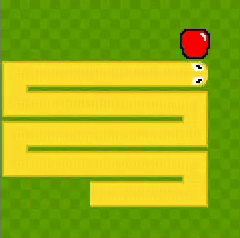

411477035 郭永田
用html 跟 cascade style sheet 做的 我已前學在學校學的 網址方在Github 的網頁選項上 沒有想要其它特別工能的話還蠻方便的 左邊是可以方其它子網頁或東西 背景還可以畫得更好看
以下是某短篇小說第一段的擷取內容：
“
What a burden, he thought. What a burden it is the onus to get up early on Monday morning, and shortly he rubbed his eye with his left hand strenuously when he extended it to reach the chunk of old-fashioned rectangular device that was always located over his head.
”
以下是我以前以作業為由而完成的小遊戲：
SNAKE
